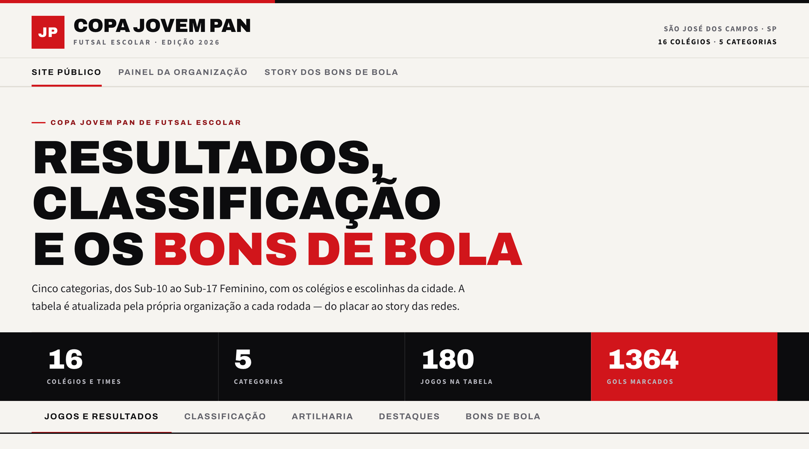
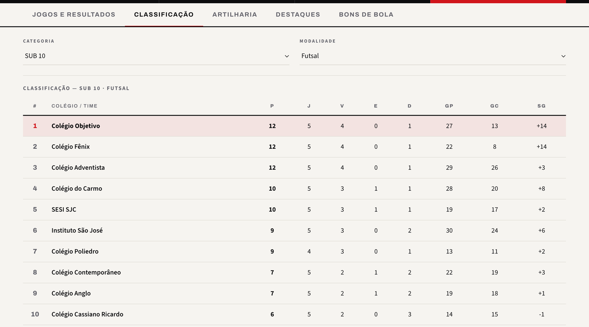
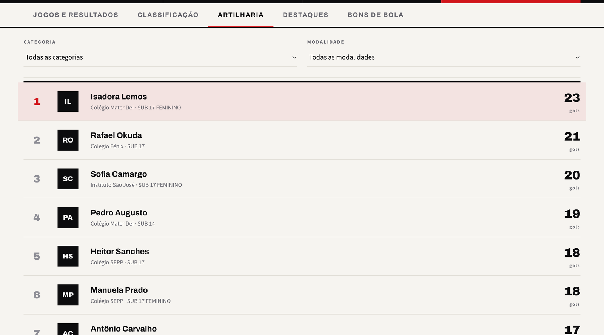
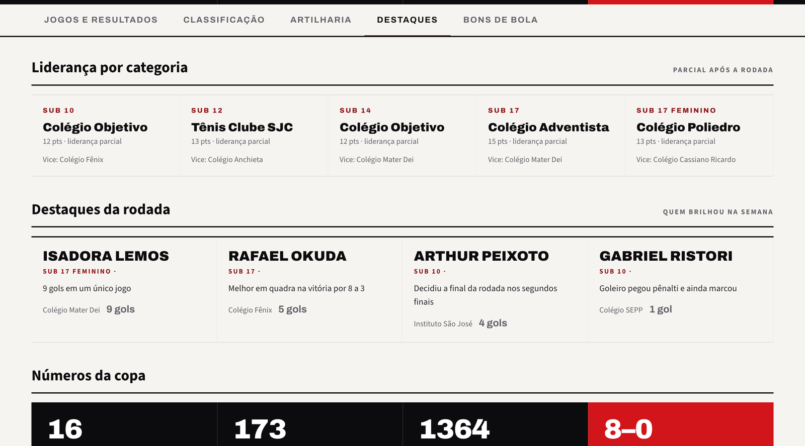
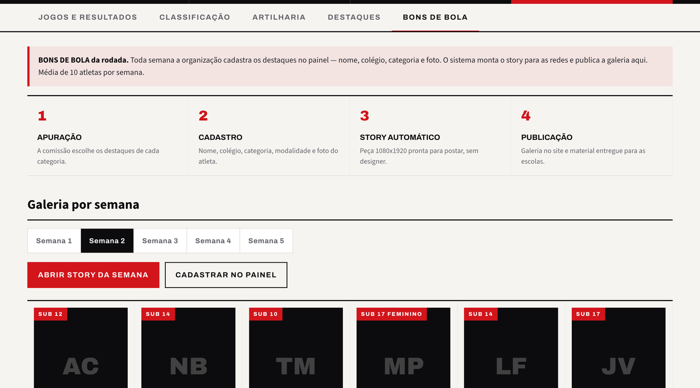
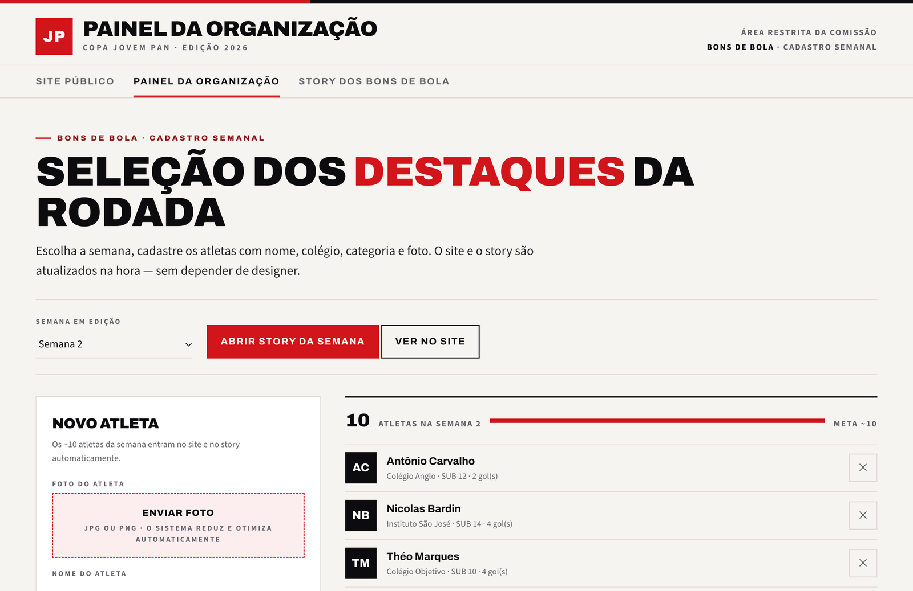
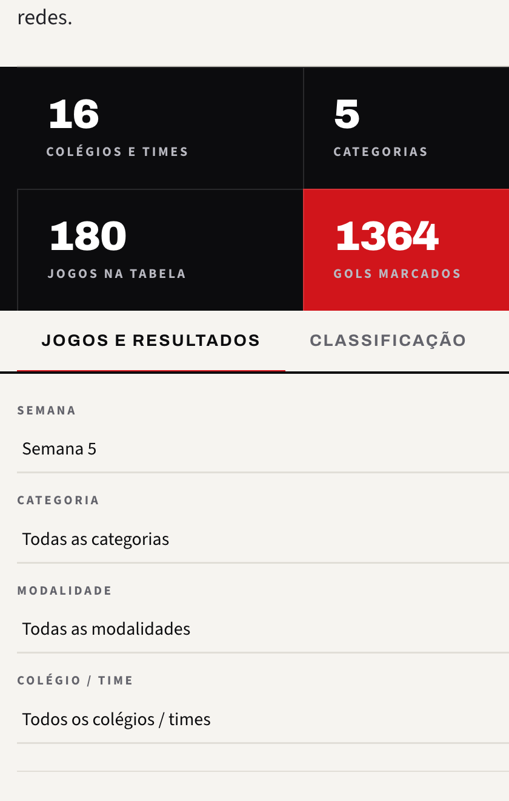
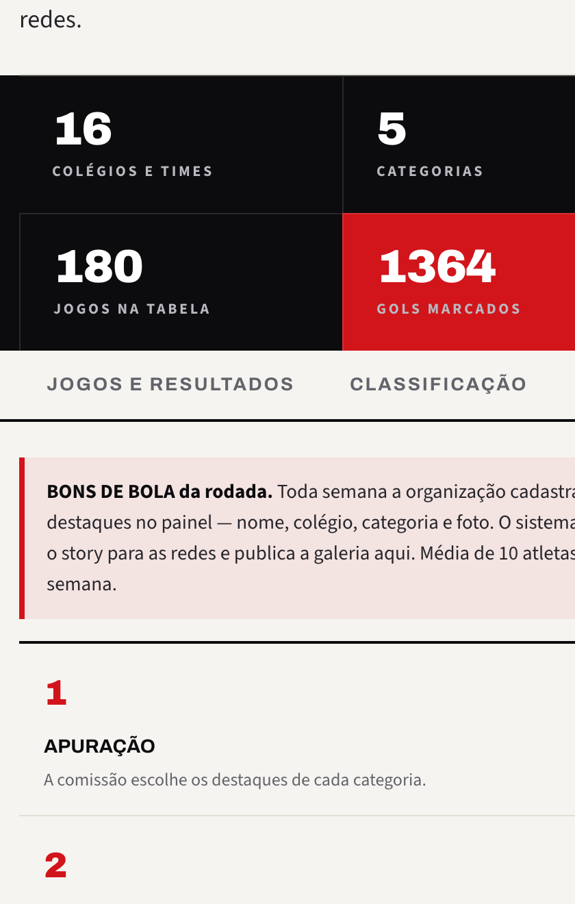
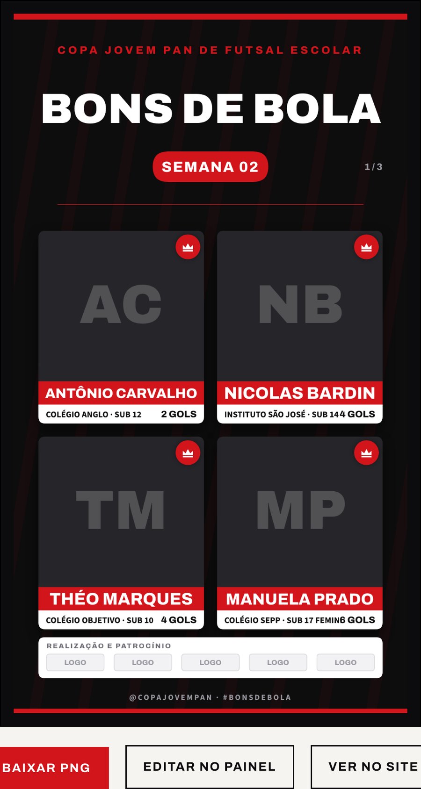

Uma plataforma oficial onde resultados, classificação, artilharia e os BONS DE BOLA são publicados pela própria organização a cada rodada — e viram story, galeria e dados para o aplicativo da rádio.

A Copa já é notícia semanal na cidade. A plataforma assume esse tom: uma interface clara, com réguas, números tabulares e hierarquia de jornal — feita para ser lida em pé, na beira da quadra, e compartilhada no celular.
Um endereço único para jogos, classificação e destaques. Fim dos resultados espalhados entre organização, colégios e redes.
Tipografia clara e contraste alto: placar, horário e local se leem de relance, no celular ou no telão do ginásio.
O story dos BONS DE BOLA sai do sistema no formato 1080x1920, sem designer e sem montagem manual.





O torcedor consulta no bolso; a rádio publica a partir do mesmo cadastro. Média de 10 atletas por semana, com foto, colégio e categoria.



Jogos e resultados, classificação, artilharia, destaques e BONS DE BOLA — com filtros por semana, categoria, modalidade e colégio, e exportação de cada jogo para o calendário do celular.
Cadastro de jogos, resultados e dos ~10 atletas da semana, com envio de foto otimizada. O que é lançado aparece no site e no story na hora.
Peças 1080x1920 na identidade da Copa, com grade de atletas e área de patrocinadores. Uma semana de 10 atletas gera 3 peças, com download em PNG.
O site e o painel viram a fonte única de dados. O app da rádio consome a API e exibe o mesmo conteúdo, atualizado no mesmo instante.
| Endpoint | Conteúdo |
|---|---|
GET /v1/jogos | Jogos com placar, data, local e situação, com filtros por categoria, rodada, colégio e modalidade |
GET /v1/classificacao | Tabela de classificação por categoria |
GET /v1/artilharia | Ranking de goleadores por categoria |
GET /v1/destaques | Destaques da rodada e liderança de cada categoria |
GET /v1/bons-de-bola | Atletas homenageados por semana, com foto |
GET /v1/categorias | Categorias, colégios e escolinhas participantes |
A comissão lança os placares de cada categoria no painel.
Seleciona os ~10 BONS DE BOLA da semana e envia as fotos.
O sistema gera as peças 1080x1920 prontas para publicar.
Classificação, artilharia e galeria atualizadas, e na API.
Reunião, mapeamento de categorias, colégios e regulamento, e validação do protótipo.
Site público completo e painel da organização no ar.
Módulo dos destaques, gerador de story 1080x1920 e API /v1.
Integração com o app, testes com uma rodada real e publicação em produção.
Treinamento da equipe, manual do painel e acompanhamento da 1ª rodada oficial.
O cronograma considera as informações de cadastro (colégios, categorias, calendário e regulamento) sendo enviadas pela Jovem Pan na primeira semana.
Aplicação web responsiva (celular e desktop), com carregamento rápido e leitura confortável em quadra.
REST em JSON, versionada em /v1, com chave de aplicação e autenticação no painel.
Banco relacional com histórico completo de edições, atletas, jogos e resultados.
Fotos dos atletas otimizadas e servidas por CDN.
Paleta e tipografia da Jovem Pan (vermelho #D1151B, preto e branco) no site e no story.
Nuvem com HTTPS e domínio próprio, pronta para o pico dos dias de final.
Site público, painel da organização, gerador de story, API para o aplicativo, publicação em produção, treinamento da equipe e suporte durante a primeira rodada.
Hospedagem e domínio, captação e tratamento das fotos dos atletas, produção de vídeo, e funcionalidades novas fora deste escopo (orçadas separadamente).
Proposta válida por 30 dias a partir da data de emissão.
Revisão desta proposta e navegação pelo protótipo.
Validação do escopo, do prazo e do investimento.
Reunião de abertura e envio das informações de cadastro.
Site no ar junto com a abertura da Copa.